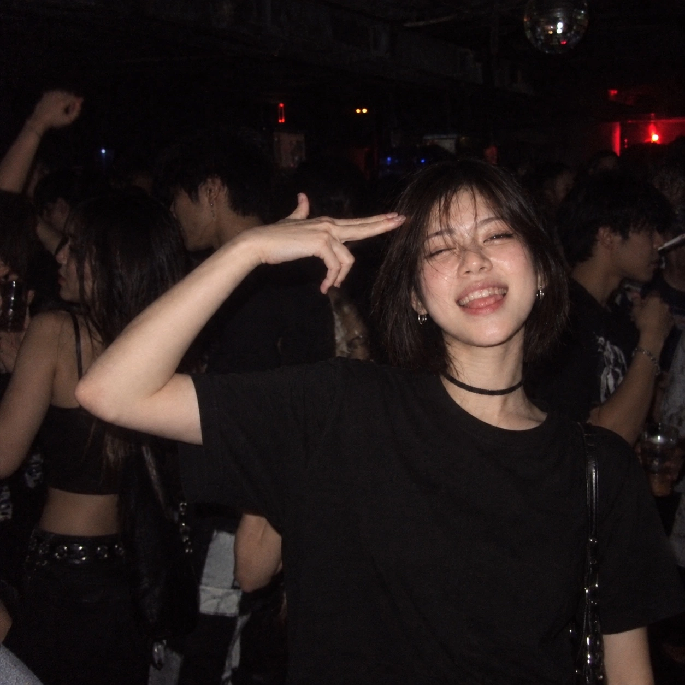

PROJECT 001 · APP / 視聴記録制作中
KIOKU
「観た」を、記憶に。
- 目的
- 観たアニメを探し、記録して、あとから振り返れるようにする。
- 現在地
- 作品探し・今夜観る・マイページの基本画面を試作。操作の流れを調整中。
- 次の一歩
- 日本語の作品検索から追加・履歴確認までをつなぐ。
PROJECTS / MAKING
点のような小さな試みも、つなげればいつか形になる。完成したものだけでなく、途中の状態と、進んだ日の記録を残していく。
「観た」を、記憶に。
一日を、AIと一緒に振り返る。
羊を数える、眠れない夜のパズル。
書いたものと作ったものを、1か所に。
眠れない夜に羊の群れを並べる「MOUTON・COUNT」。ルール・音・クエスト・着せかえまで作り、Android と iPhone のアプリが組み上がることを確かめた。
Philosophy / Body / Food & Scienceの3テーマを大きく表示。生成したアートをカード用に調整し、「今日は、何が気になる？」の見出しは静止表示にした（PR #110・#112・#113）。
MOUTONの文字をゆっくり見せてから、幕が滑らかに消える演出に。冒頭のカクつきやフォントの切り替わりを調整した（PR #100・#103・#107・#109）。
静かな最初の画面から、映画的なオープニング、短いトップ、3つのテーマを選べる画面へ。MOUTON自身の変化を記録しました。
変化を時系列で見る
言葉にならない空気を、写真に残す。夜の熱、街の光、旅先の一瞬、静かなまなざし。ムートンのビジュアル制作ノート。

MOUTON / VISUAL ARCHIVE — 2026.10.14